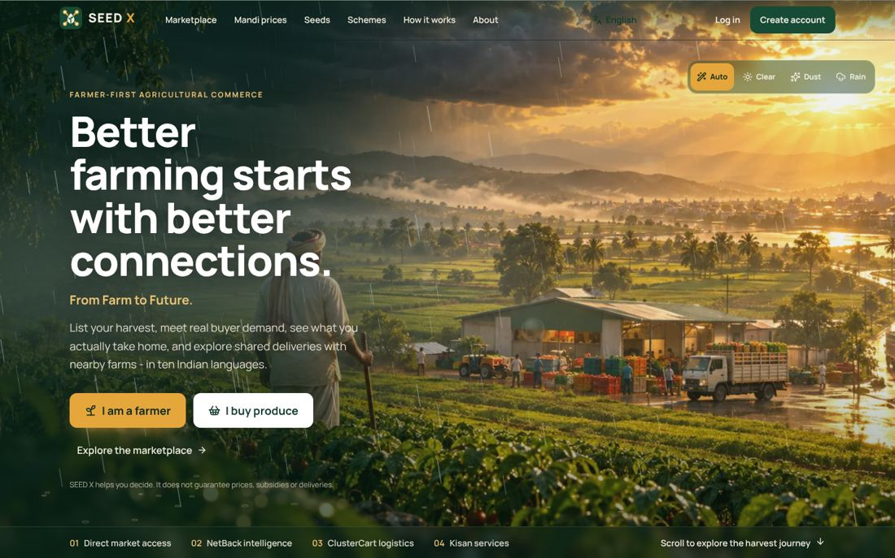
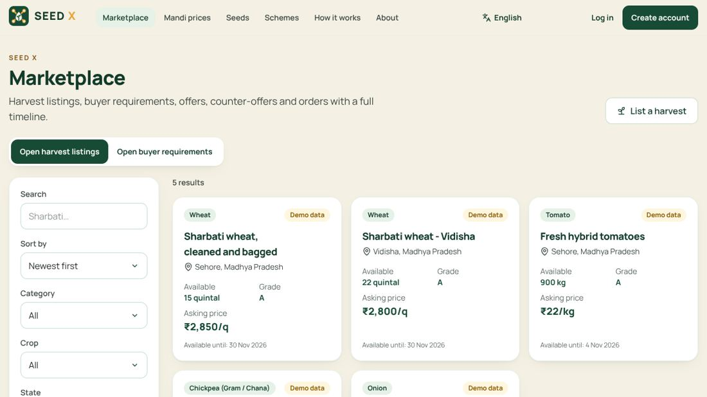
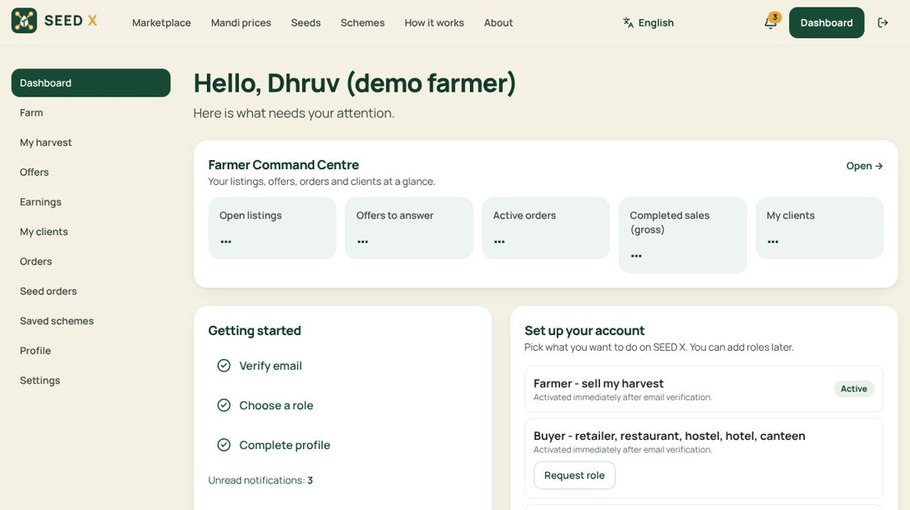
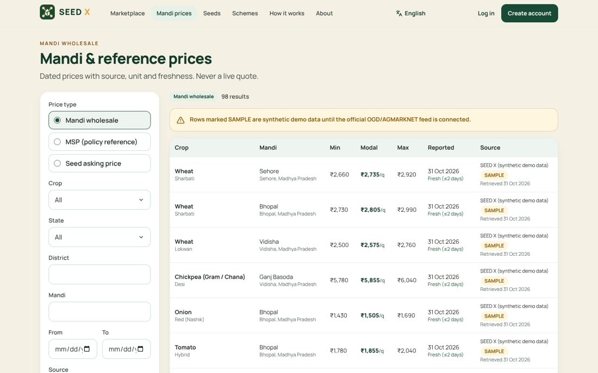
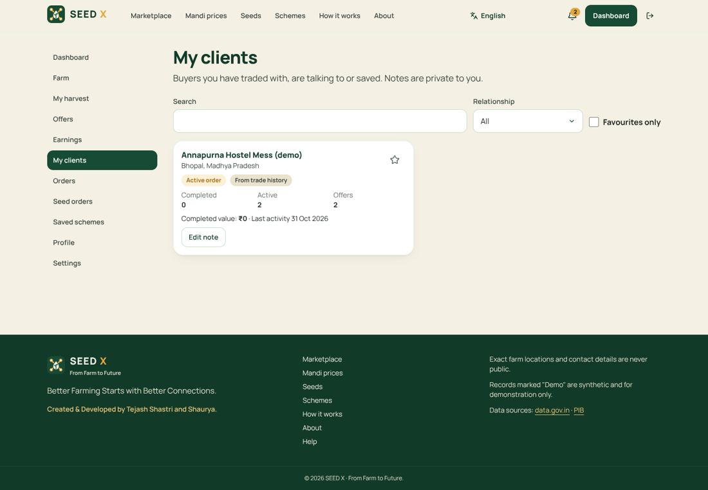
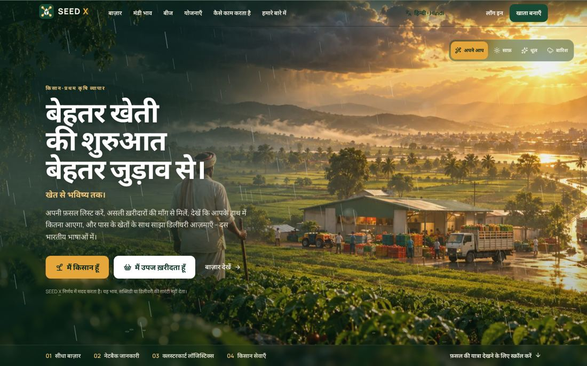
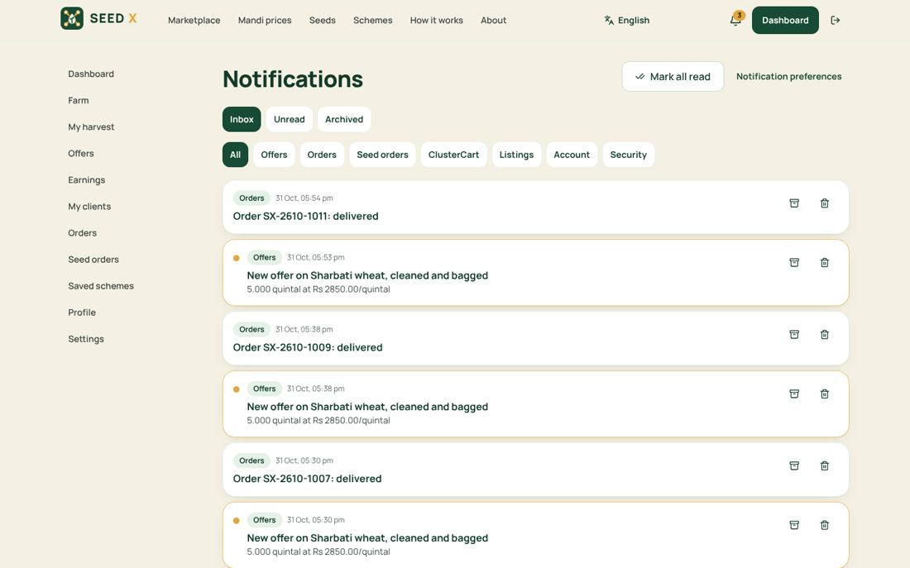
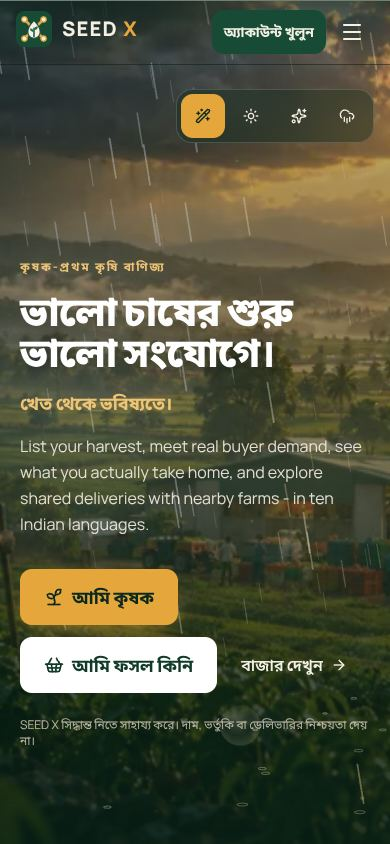
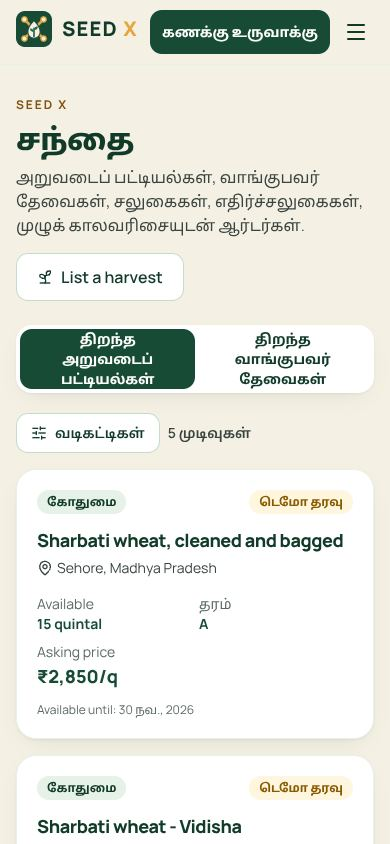

Everything learned while building SEED X: what it is, how it works, what is live, what works and what does not, and what to do next. Written so a new team member or a new Claude account can build the presentation without the original chat.
A farmer-first agricultural commerce platform for India that connects harvest supply with real buyer demand, shows farmers what they actually take home, and pools deliveries between nearby farms when it really saves money.
| Item | Status |
|---|---|
| Live website | LIVE https://seedxsss.tejash-shastri-rx.workers.dev (Cloudflare Workers, auto-deploys from GitHub main) |
| Database & backend | LIVE Supabase project jssvwvhqlmijxujquksw (Mumbai region), 7 migrations applied |
| Core journeys | TESTED listing → offer → accept → transport → delivery → completion; verified in a real browser on the live database |
| Email verification | OWNER ACTION works, but Supabase URL settings must point at the live site; production needs own SMTP |
| Payments, SMS, live mandi feed | NOT BUILT need providers / API keys |
| Role | What they do on SEED X | How they get the role |
|---|---|---|
| Farmer | List harvests (crop, variety, grade, quantity, price floor, dates, photos, private pickup address), answer offers, see NetBack, track orders and earnings, manage My Clients. | Self-service, active right after email verification. |
| Buyer | Retailers, restaurants, hostels, hotels, canteens. Browse/filter the marketplace, post requirements, make offers, run ClusterCart, track purchases, manage My Suppliers. | Self-service after email verification. |
| Seed seller | List seed products with lot, germination, expiry and certification reference; manage stock; fulfil seed orders (pay on delivery). | Requested, then approved by an admin. |
| Logistics partner | See assigned jobs; exact addresses appear only once pickup is scheduled; mark in transit. | Requested, then approved by an admin. |
| Landowner | Publish land availability and receive enquiries (no legal lease). | Requested, then approved. |
| Admin / support | Approve roles, moderate, verify seed certificates, review schemes, import prices, manage the crop catalogue, read audit log. | Only granted by the owner in the database; every admin action needs two-factor login (MFA). |
Honesty rules built into the product: never invent prices, weather, counts, savings or certifications; demo data is always labelled "Demo"; transport costs are labelled estimates.
Harvest listings and buyer requirements in two tabs. Filters: category, crop, state, grade, minimum quantity, price range, harvest date, hide demo records; sort by newest, price, quantity or ending soon; pagination; saved searches (per account) and recent searches (on the device).
Buyers offer on listings; farmers accept, reject or counter (versioned). Accepting reserves stock atomically, so the same stock can never be sold twice. Orders keep a snapshot of agreed terms and a permanent timeline: confirmed → pickup scheduled → in transit → delivered → completed, or cancelled / disputed.
Shows gross value, each seller-paid cost (packing, handling, transport if seller pays) and the farmer's estimated net, separately from the buyer's landed cost. All money is stored in whole paise to avoid rounding errors.
Deterministic matching engine (not AI). Applies hard rules first (crop, variety, grade, dates, freshness, price floor, transit time) with reason codes, builds candidate pickups, compares separate vs pooled transport (road distance ≈ straight line × 1.3, default rate card), recommends pooling only if ≥5% cheaper and within transit limits. Each farmer still accepts their own offer.
Farmers see buyers, buyers see farmers. Relationship stage is computed from real trading history: lead → saved → enquiry → active order → existing client → repeat client. Favourites and private notes that only the owner can ever see.
Database-backed, real-time bell. Categories (offers, orders, seeds, ClusterCart, listings, account, security), unread / archived views, archive, delete, mark all read, duplicate-proof. Preferences for optional categories; orders, account and security always delivered. Email channel recorded but not sent until SMTP exists.
Dashboard per role with real numbers only: Farmer Command Centre, Buyer Procurement Centre, Seed Seller Centre, Logistics Centre, Admin entry.
Seed store (badges say exactly what was verified), mandi price explorer (date, source, unit, freshness; currently sample data + MSP rows marked "verification pending"), 6 official government schemes (PM-KISAN, PMFBY, KCC, Soil Health Card, e-NAM, PM-KUSUM), land workspace.
Vegetables: tomato, potato, onion, cauliflower, cabbage, brinjal, okra, green chilli, capsicum, cucumber, carrot, radish, spinach, peas, other. Fruits: mango, banana, apple, guava, papaya, pomegranate, grapes, watermelon, other. Grains: wheat, paddy, rice, maize, barley, millets, bajra, other. Pulses: chickpea, lentils, pigeon pea, green gram, black gram, other. Oilseeds: mustard, groundnut, soybean, sesame, sunflower, safflower, other. Plus cotton. Every crop has its name in all ten languages; admins add or switch off crops at /admin/catalogue.
English, हिन्दी Hindi, বাংলা Bengali, తెలుగు Telugu, मराठी Marathi, தமிழ் Tamil, ગુજરાતી Gujarati, ಕನ್ನಡ Kannada, മലയാളം Malayalam, ਪੰਜਾਬੀ Punjabi. Picker shows native names; choice saved on the device and in the account. Core journeys are 100% translated in all ten; other screens fall back to English (Hindi ≈ 94% of all text, the other eight ≈ 44%). All non-English text is machine-assisted and needs native-speaker review.
The database is the source of truth. The browser never sets owner IDs, prices, totals, inventory or roles directly: it calls server functions that validate everything and record events. That is why the app stays correct even if someone tampers with the browser.
| Suite | Result |
|---|---|
| TypeScript typecheck | pass |
| Unit tests (Vitest) | 72 / 72 |
| Database security tests (pgTAP) | 141 / 141 |
| Browser tests (Playwright) | 14 / 14 incl. accessibility |
| Accessibility (axe, WCAG 2.1 AA) | 0 serious issues (en, hi, ta) |
| Lint | 0 errors |
| Security headers / CSP check | 0 violations |
Anonymous users can't read private data · Farmer A can't see Farmer B's records or clients · Buyer A can't see Buyer B's orders or suppliers · buyers can't edit farmer inventory · sellers can't touch other sellers' products · logistics sees only assigned jobs · no self-promotion to admin · admin actions need MFA · unverified users blocked · notifications can't be forged · private storage paths can't be guessed · tampered price/quantity rejected · overselling prevented · replays don't duplicate · illegal status changes rejected · invalid uploads denied · search reveals nothing private · untrusted origins rejected by the ClusterCart function.
All main pages return 200 including direct refresh of deep links; security headers present; schemes and listings load from the database; demo farmer logs in and reaches the Farmer Command Centre; Hindi switch works; no page errors.









| Area | Status | Notes |
|---|---|---|
| Listings, offers, counter-offers, acceptance, orders, timeline | Works | End-to-end browser test on live database. |
| Overselling / duplicate protection | Works | Simultaneous-accept race test: exactly one winner. |
| Marketplace filters, sort, saved searches | Works | Filters change real database results. |
| My Clients / My Suppliers | Works | Private notes proven invisible to the other party. |
| Notifications (in-app, real-time) | Works | Archive/restore tested. |
| Crop catalogue + admin page | Works | Admin page blocked without MFA (tested). |
| Ten languages | Partial | Core journeys complete; some screens English; needs native review. |
| ClusterCart engine | Partial on live site | Works in browser preview; server run needs the live URL added to ALLOWED_ORIGINS (owner). |
| Sign-up email verification | Owner action | Verification succeeds, but the link returned to localhost until Supabase URL settings point at the live site. |
| Email notifications / password reset at scale | Owner action | Built-in sender is rate-limited (a few per hour); needs own SMTP. |
| Mandi prices | Sample data | Clearly labelled SAMPLE; live feed needs a data.gov.in API key. |
| Schemes | Pending review | Official links present; "source check pending" until an admin reviews. |
| Payments | Not built | Orders say payment is not tracked; seeds are pay on delivery. |
| SMS, live weather, seller verification filter | Not built | Need providers / data model. |
| Separate "cancelled" / "failed delivery" statuses | Mapped | Represented as withdrawn / disputed. |
| Backups | Owner action | Free plan has none; upgrade or run scripts/backup.sh. |
| Thing | Where / how |
|---|---|
| Live site | https://seedxsss.tejash-shastri-rx.workers.dev (Cloudflare Workers, worker seedxsss, account tejash-shastri-rx) |
| Source code | github.com/tejashshastrirx-cell/seedx, branch main. Currently public; contains no secrets. Can be made private in repo Settings. |
| Auto-deploy | Every push to main → Cloudflare runs npm run build then npx wrangler deploy (config in wrangler.jsonc). |
| Database / auth | Supabase project "khetsetu-dev", ref jssvwvhqlmijxujquksw, region ap-south-1 (Mumbai), Free plan. Do not confuse with the unrelated project ucjoivgcljvilstqqiyl (sales_os). |
| Public build config | .env.production in the repo holds the Supabase URL and the publishable (browser-safe) key. Never put secret/service-role keys there. |
| Edge Function | run-clustercart (JWT required, 6 runs/min/user, origin allow-list via secret ALLOWED_ORIGINS). |
| Demo accounts | dhruv.farmer@, kavita.farmer@, raghav.farmer@, hostel.buyer@, restaurant.buyer@, seeds.seller@, transport.partner@, admin.demo@ — all @seedx.example. Password is in the developer's .env.local (not in this document). Admin needs TOTP set up first. |
| Downloads made | seed-x-source.zip (clean source) and seed-x-cloudflare-pages.zip (ready-built site) were sent in chat. |
Node 22 → npm install → create .env.local from .env.example → npm run dev (http://localhost:5173). Checks: npx tsc -b, npm test, npm run db:test, npm run build, npx playwright test.
docs/: IMPLEMENTATION_AUDIT, RELEASE_REPORT, PRODUCT_SPEC, ARCHITECTURE, DATABASE_SCHEMA, SECURITY, TESTING, LANGUAGES, i18n-coverage, DEPLOYMENT, BACKUP_RESTORE, OPERATIONS, SPLINE_ASSETS, and this handover. CLAUDE.md has rules for any future Claude session.
https://seedxsss.tejash-shastri-rx.workers.dev; Redirect URLs add https://seedxsss.tejash-shastri-rx.workers.dev/**, http://localhost:5173/**, http://localhost:3000/**. Fixes verification and reset links.ALLOWED_ORIGINS = https://seedxsss.tejash-shastri-rx.workers.dev,http://localhost:5173. Enables server-side ClusterCart on the live site.scripts/backup.sh; back up storage separately.select app_private.owner_grant_staff_role('you@domain', 'admin');, then enrol an authenticator app in Settings.localhost:3000 because Supabase Site URL was not set. Fix = step 1 above._redirects file with /* /index.html 200 (infinite loop). Fixed with wrangler.jsonc single-page-application setting..env.production.| Phase | What happened |
|---|---|
| 1. Blueprint | 84-page greenfield blueprint (originally "KHETSETU"): marketplace, NetBack, ClusterCart, seeds, prices, schemes, landowner, admin with MFA, Hindi/English. |
| 2. Foundation | New dedicated Supabase project in Mumbai. Schema, row-level security, atomic offer acceptance, storage, realtime, ClusterCart engine and Edge Function; React app with all routes. |
| 3. Rebrand | Renamed everywhere to SEED X with tagline, credits and team. |
| 4. Visual upgrade | Low-poly 3D look rejected; replaced by photoreal cinematic hero with Canvas rain/dust weather; Three.js only for ClusterCart data. Spline dropped (no connector). |
| 5. Hardening | "Demo must be functional, database safe, security high": E2E journey, concurrency race test, security probes, CSP. |
| 6. One-Shot directive | 46-crop catalogue, 10 languages, My Clients/Suppliers, notification centre, marketplace filters, command centres, 141 database tests, accessibility fixes, full docs, clean ZIPs. |
| 7. Go live | GitHub repo seedx created and pushed; Cloudflare Workers build fixed twice (redirect loop, build env); live site verified. |
| # | Slide | Talking points |
|---|---|---|
| 1 | Title | SEED X · Better Farming Starts with Better Connections · From Farm to Future · Tejash Shastri & Shaurya. |
| 2 | The problem | Middlemen, hidden costs, small expensive loads, scattered and unverified information, language barriers. |
| 3 | Meet Dhruv | A farmer persona: lists his wheat in two minutes in Hindi. |
| 4 | Four pillars | Direct market access · NetBack · ClusterCart · Kisan services. |
| 5 | NetBack | Farmer net vs buyer landed cost, shown separately and honestly. |
| 6 | ClusterCart | Pools nearby harvests only if ≥5% cheaper; explains every yes and no; each farmer accepts their own offer. |
| 7 | Relationships & dashboards | My Clients / My Suppliers stages; command centres per role; real-time notifications. |
| 8 | Built for Bharat | Ten languages in native scripts, works without 3D, mobile-first, 46 crops. |
| 9 | Trust & security | Row-level security on every table, MFA admins, no overselling, private addresses, 227 passing tests. |
| 10 | Technology | React + Supabase (Postgres, Auth, Storage, Realtime, Edge Functions) + Cloudflare; architecture diagram from section 04. |
| 11 | Live demo | seedxsss.tejash-shastri-rx.workers.dev: marketplace, demo farmer dashboard, language switch. |
| 12 | Roadmap | Live mandi data, payments, SMS alerts, own email, native-reviewed translations, custom domain, pilot with real farmers. |
NetBack: what the farmer keeps after seller-paid costs. Landed cost: what the buyer pays including buyer-paid costs. ClusterCart: SEED X's pooled-pickup matching engine. Mandi: regulated agricultural market. MSP: Minimum Support Price announced by government. RLS: row-level security, database rules deciding who sees each row. MFA/TOTP: two-factor login with an authenticator app. Paise: 1/100 rupee; all money stored in paise. Quintal: 100 kg.